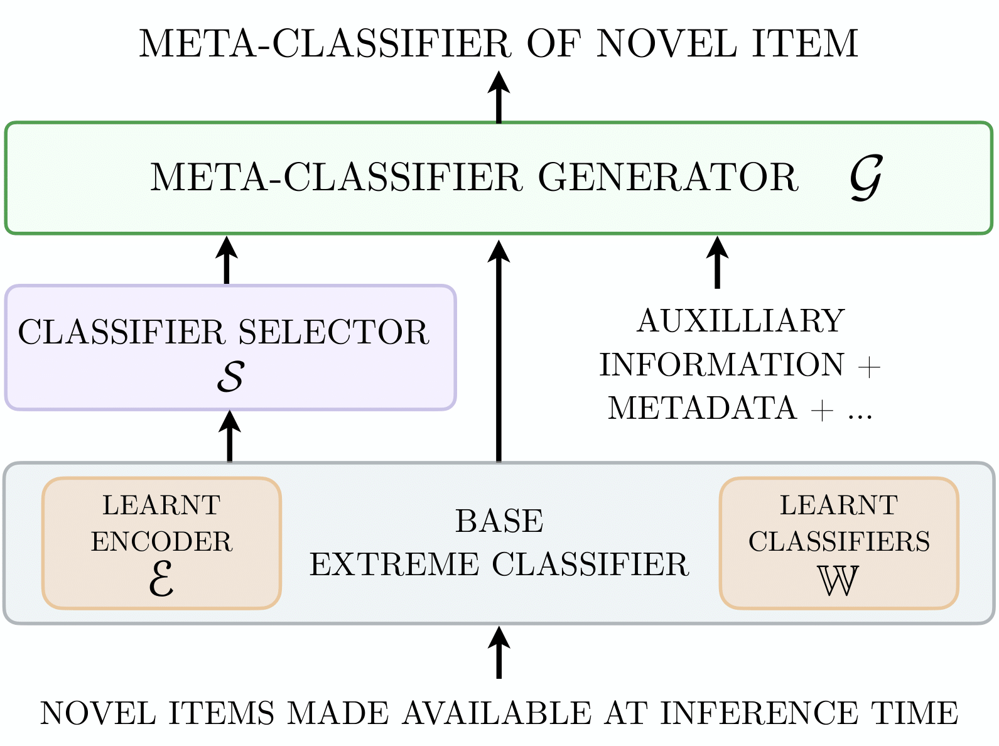

A general framework (EMMETT) and a simple, deployable algorithm (IRENE) that synthesize classifiers on-the-fly for novel items — no retraining required.

The EMMETT framework. Given an extreme-classification base (encoder \(\mathcal{E}\) and learnt classifiers \(\mathbb{W}\)), a Classifier Selector \(\mathcal{S}\) retrieves the most informative observed-item classifiers for a novel item, and a Meta-Classifier Generator \(\mathcal{G}\) combines them with the item's encoder representation and metadata to synthesize the novel item's meta-classifier — entirely at inference time.
We develop accurate and efficient solutions for large-scale retrieval tasks where novel (zero-shot) items can arrive continuously at a rapid pace. Conventional Siamese-style approaches embed both queries and items through a small encoder and retrieve the items lying closest to the query. While this allows efficient addition and retrieval of novel items, the small encoder lacks sufficient capacity for the world knowledge needed in complex retrieval tasks. Extreme classification (XC) approaches address this by learning a separate classifier for each item observed in the training set, significantly increasing model capacity. Such classifiers outperform Siamese approaches on observed items, but cannot be trained for novel items due to data and latency constraints. To bridge these gaps, this paper develops: (1) a new algorithmic framework, EMMETT, which efficiently synthesizes classifiers on-the-fly for novel items by relying on the readily available classifiers for observed items; (2) a new algorithm, IRENE, a simple and effective instance of EMMETT specifically suited for large-scale deployments; and (3) a new theoretical framework for analyzing the generalization performance in large-scale zero-shot retrieval that guides our algorithmic and training design decisions. Comprehensive experiments demonstrate that IRENE improves zero-shot retrieval accuracy by up to 15% points in Recall@10 when added on top of leading encoders. On an online A/B test in a large-scale ad retrieval task on a major search engine, IRENE improved the ad click-through rate by 4.2%.
Large-scale retrieval systems are flooded daily with novel items — new products, emerging search keywords, breaking-news topics — that arrive faster than annotations can be collected. Small Siamese encoders can embed these items instantly but lack the capacity to resolve named entities, model numbers, synonymy, and polysemy. Extreme classifiers carry this world knowledge in a dedicated per-item classifier, but a novel item has no clicks and therefore no classifier. Our guiding question:
How can we construct accurate representations for novel items without significant computational overhead in large-scale retrieval?
EMMETT is built on a key insight: classifiers trained for a million observed items already contain, in distilled and readily usable form, most of the world knowledge any novel item would need. EMMETT therefore synthesizes a classifier for a novel item by selecting and combining the classifiers of related observed items. A second insight powers training: each observed item, with its own classifier held out, can serve as a proxy for a zero-shot item — yielding a massive training set for zero-shot generalization.
A frozen 6-layer DistilBERT encoder \(\mathcal{E}\) and per-item classifiers \(\mathbb{W}\), trained with any state-of-the-art recipe (NGAME, ANCE, MACLR, DPR).
For a novel item, an ANNS / MIPS search (e.g. DiskANN) over observed-item embeddings retrieves its \(K\) nearest neighbors in \(\mathcal{O}(\log L)\) time. \(K\approx 3\) works best.
A single-layer Transformer attends over the novel item's embedding and the \(K\) selected classifiers to synthesize the meta-classifier \(u_\ell\) in one forward pass.
The meta-classifier for item \(z_\ell\) is produced by the generator \(u_\ell = \mathcal{G}_\phi(z_\ell, \mathcal{S}(z_\ell))\), where each layer takes the form:
\[ \texttt{Linear}\big(\texttt{Self-Attention}(z_\ell + t_{\text{enc}},\; w^1_\ell + t_{\text{clf}},\; w^2_\ell + t_{\text{clf}},\; \dots)\big), \]
where \(w^i_\ell \in \mathcal{S}(z_\ell)\) are the selected classifiers and \(t_{\text{enc}}, t_{\text{clf}}\) are learnable type embeddings that distinguish the encoder input from the classifier inputs. Self-attention lets \(\mathcal{G}\) filter noisy neighbors and fuse useful world knowledge — far more expressive than a naive (weighted) sum of classifiers.
To simulate novel items at training time, an observed item \(z_\ell\) is represented not by its own classifier \(w_\ell\) but by the meta-classifier \(u_\ell\) synthesized from its neighbors. The encoder and observed-item classifiers stay frozen; only \(\mathcal{G}\) is trained, using a weighted one-vs-all BCE loss:
\[ \mathcal{L}_\mathcal{G} = \sum_{x_i \in \mathbb{X}} \sum_{z_\ell \in \mathbb{Z}_{o,i}} \Big( C\, y_{i\ell}\ln\big(\sigma(x_i^\top u_\ell)\big) + (1 - y_{i\ell})\ln\big(1 - \sigma(x_i^\top u_\ell)\big)\Big), \]
where \(\sigma\) is the sigmoid, \(C\) up-weights the rare positive query-item pairs, and \(\mathbb{Z}_{o,i}\) contains positives plus mined negatives. New items are incorporated by simply encoding them and inserting them into an updatable ANNS index — no model retraining.
We cast zero-shot retrieval as binary classification over query-item pairs and develop a generalization framework around it. Two results directly motivate IRENE's design:
Theorem 1 (Generalization of EMMETT). With probability at least \(1-\delta\),
\[ \mathcal{R} \le \hat{\mathcal{R}} + \hat{\mathfrak{R}}_{\mathbb{S}}(\mathcal{F}) + 3\left( q + \sqrt{\tfrac{\ln\!\left(\frac{2}{\delta - 2q}\right)}{2M}} \right), \qquad q \le \exp\!\left\{ -2M\left(1 - p - \tfrac{\kappa}{M}\right)^2 \right\}. \]
Forming the dataset over the full Cartesian product of queries and items (the one-vs-all view) drives the generalization gap toward \(q \approx e^{-2M}\) — explaining why IRENE's one-vs-all loss generalizes so well to novel items.
Lemma 2 (Complexity of the IRENE generator). \(\hat{\mathfrak{R}}_{\mathbb{S}}(\mathcal{F}) \le \mathcal{O}\!\big(B\lVert M\rVert_2 \sqrt{d\ln(K+1)}\big).\) Two consequences follow: (i) complexity grows only logarithmically in \(K\), so small neighborhoods are provably preferable; and (ii) because the classifiers are frozen, the bound is independent of the number of items \(L\) — IRENE scales gracefully as the catalogue grows. Freezing matters: training classifiers through the meta-loss reintroduces a \(\sqrt{L}\) dependence (Corollary 3).
Added on top of four leading encoders, IRENE consistently and substantially lifts zero-shot accuracy. Gains are largest where queries and items are lexically dissimilar — precisely where a small encoder needs the world knowledge stored in neighboring classifiers.
Zero-shot P@1 on LF-WikiHierarchy-550K. Each base encoder is shown against its +IRENE variant.
On average IRENE improves P@1 by 10.1% and R@10 by 11.9% in the zero-shot setting, and P@1 by 15.5% / R@10 by 11.5% in the generalized setting.
Zero-shot R@10 of NGAME vs. NGAME+IRENE across four benchmarks spanning query completion, taxonomy completion, product recommendation, and category annotation.
As the fraction of novel items grows from 10% to 40% on LF-WikiHierarchy-550K, the base encoder degrades sharply while IRENE stays resilient — consistent with its \(L\)-independent generalization bound.
Zero-shot P@1 vs. novel-item ratio.
IRENE adds essentially no retrieval latency and only ~0.46 ms to item representation, while being about 350× faster than the token-interaction baseline SemSup-XC. A novel keyword can be encoded in under 1 ms.
| Method | Rep. Time (ms) ↓ | Retrieval Time (ms) ↓ |
|---|---|---|
| NGAME | 0.08 | 0.43 |
| SemSup-XC | N/A | 151.51 |
| DEXA | 0.48 | 0.43 |
| NGAME + IRENE | 0.54 | 0.43 |
IRENE was deployed on a major search engine and evaluated against an extensive control ensemble of dense retrieval, graph-based, generative, and IR algorithms. Trained on the proprietary KeywordPrediction-10M dataset (~220M training queries, ~5M items), it generated representations for 100M novel advertiser keywords. Online A/B results on live traffic:
Against the top in-production dense retrievers (anonymized as M1–M4), each given only a keyword's text, IRENE is at least 4% better in R@100.
R@100 on 100M zero-shot advertiser keywords (M1–M4 are anonymized production retrievers).
By endowing a query's representation with world knowledge drawn from the classifiers of similar observed items, IRENE surfaces advertiser keywords that share no lexical overlap with the query — matches that the entire production ensemble missed.
| User Query | Advertiser Keyword Retrieved by IRENE |
|---|---|
| firewalla gold att fiber connection | att ethernet network |
| work order app hydraulics | plumbing work order software |
| netbenefits com login | fidelity retirement account |
| hypokalemia | high potassium in the blood |
| 23andme | genetic screening |
| financial services crm software | sap customer management software |
The attention-based generator is the workhorse: replacing it with a (weighted) sum of classifiers drops zero-shot P@1 by roughly 24%. Consistent with Lemma 2, a small neighborhood (\(K\approx 3\)) and a single generator layer (\(D=1\)) balance capacity against overfitting and training cost.
| Configuration | P@1 ↑ | P@5 ↑ | R@10 ↑ |
|---|---|---|---|
| IRENE (\(D=1,\,K=3\)) | 69.29 | 38.81 | 80.40 |
| Generator depth \(D=2\) | 70.36 | 39.06 | 80.39 |
| Generator depth \(D=4\) | 70.71 | 39.11 | 80.27 |
| \(\mathcal{G}\) as Sum | 45.49 | 25.46 | 59.01 |
| \(\mathcal{G}\) as weighted Sum | 46.39 | 25.88 | 59.29 |
| Selector \(K=1\) | 68.98 | 38.56 | 80.11 |
| Selector \(K=6\) | 69.99 | 39.12 | 80.79 |
| Selector \(K=20\) | 69.07 | 38.57 | 79.80 |
IRENE also extends naturally to the extreme tail. IRENE-OneShot folds the single revealed query of a one-shot item into the classifier selector via max-voting, beating even an idealized NGAME retrained from scratch on the consolidated data by ~1–2% — without any fine-tuning of the base model.
@inproceedings{yadav2024extrememetaclassification,
author = {Yadav, Sachin and Saini, Deepak and Buvanesh, Anirudh and Paliwal, Bhawna
and Dahiya, Kunal and Asokan, Siddarth and Prabhu, Yashoteja
and Jiao, Jian and Varma, Manik},
title = {Extreme Meta-Classification for Large-Scale Zero-Shot Retrieval},
booktitle = {Proceedings of the 30th ACM SIGKDD Conference on Knowledge Discovery and Data Mining},
series = {KDD '24},
year = {2024},
doi = {10.1145/3637528.3672046}
}